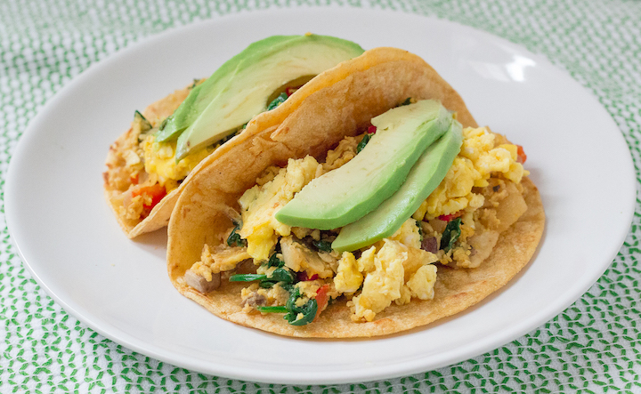

Migas Tacos

Migas is a dish traditionally made from stale bread and other ingredients in
Spanish and Portuguese cuisines. Originally introduced by shepherds, migas are
very popular across the Iberian Peninsula, and are the typical breakfast of
hunters at monterías in southern Spain.
This tex-mex variation of migas uses tortilla chips in place of stale bread and
is best served up as a taco.
Ingredients
- 4 eggs
- 1 tbsp butter
- 1 poblano pepper, diced
- 1 onion, diced
- 1/4 cup shredded cheese
- 1/2 cup tortilla chips, crushed or strips
- 1/3 cup salsa
- 4 wheat or corn tortillas
- 1 avocado, sliced
- cilantro for garnish
Steps
- Melt butter on a large pan over medium heat.
- Add onions and poblano to pan and cook, stirring occassionally for 3-4 minutes until softened. Reduce heat to medium-low.
- Move vegetables to side of pan and add eggs, scrambling until they start to form. Mix in vegetables and add tortilla chips.
- Once tortilla chips start to soften, about 1-2 minuts, add cheese and salsa and combine all ingredients in pan. Remove from heat.
- Add migas scramble to tortillas and top with avocado and cilantro.